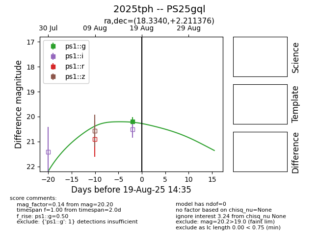

Target 2025tph at 2025-08-19 20:14, see:
TNS: wis-tns.org/object/2025tph
YSE: ziggy.ucolick.org/yse/transient_detail/2025tph
alt names
2025tph (yse,tns)
PS25gql (panstarrs)
coordinates:
equatorial (ra, dec) = (18.3340,+2.21138)
galactic (l, b) = (133.9877,-60.18947)
photometry
last ps1::g=20.20
1 ps1::g detections
